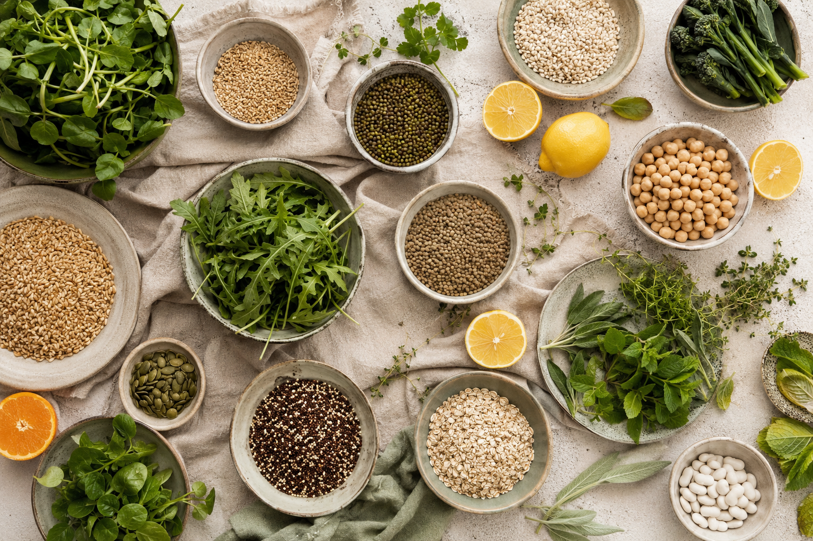

Useful
Every idea earns its place in a real kitchen.
ABOUT THE STUDIO
We translate useful food knowledge into seasonal, satisfying meals—without moralising ingredients or prescribing perfection.

OUR EDITORIAL APPROACH
Every guide combines practical kitchen technique, adaptable ingredient roles and sensory cues. Dietary needs differ, so our work offers patterns rather than personal medical advice.
We value seasonal produce, accessible shopping, lower waste and food that is as pleasurable to eat as it is supportive.
Every idea earns its place in a real kitchen.
Flexible paths welcome different households.
Claims stay measured, clear and responsible.